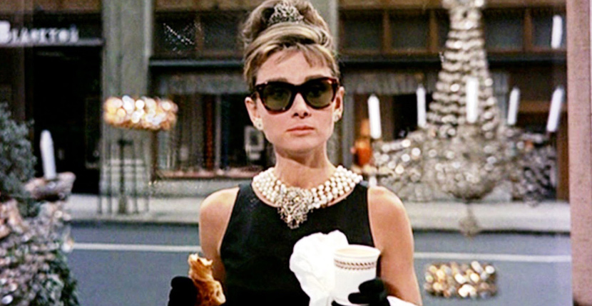

Audrey Hepburn

A picture of Audrey Hepburn from the movie Breakfast at Tiffany's
This tribute page is about Audrey Hepburn, a classic beauty with poise and class. If you want to learn more about Audrey Hepburn, you can read more about her HERE